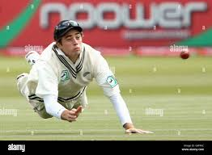
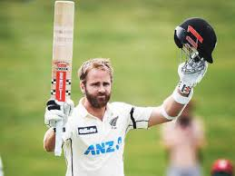

New Zealand Test Team
2021 WTC champions with a balanced squad.
About New Zealand Test Team
Country: New Zealand
Home Ground: Various (e.g., Basin Reserve, Wellington)
Captain: Tim Southee
Coach: Gary Stead
New Zealand’s Test team, the Black Caps, won the inaugural WTC in 2021 with a balanced attack.
New-Zealand Players

Tim Southee (C)
Captain, pace bowler.

Kane Williamson
Batsman, top-ranked anchor.
Devon Conway
Batsman, reliable opener.
Tom Latham
Batsman, opener.
Daryl Mitchell
Batsman, middle-order.
Tom Blundell
Wicketkeeper-batsman, reliable.
Kyle Jamieson
All-rounder, pace bowler.
Trent Boult
Bowler, swing specialist.
Matt Henry
Bowler, pace bowler.
Neil Wagner
Bowler, short-ball specialist.
Mitchell Santner
All-rounder, left-arm spinner.